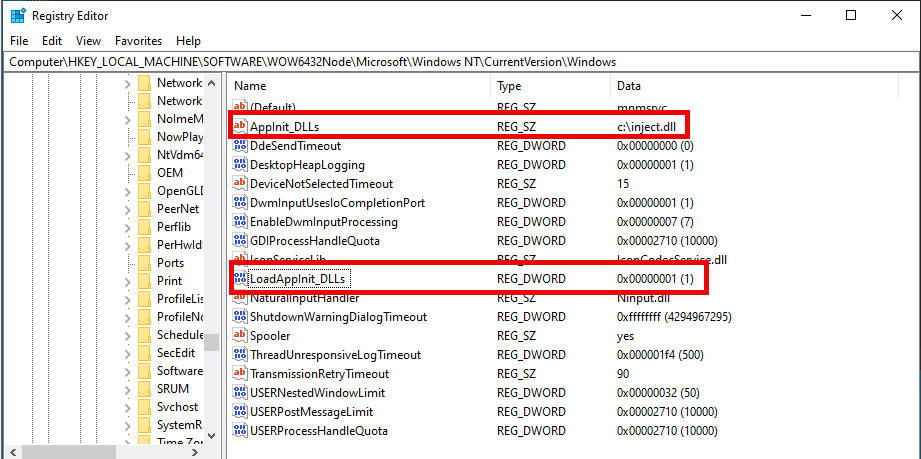
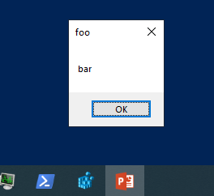
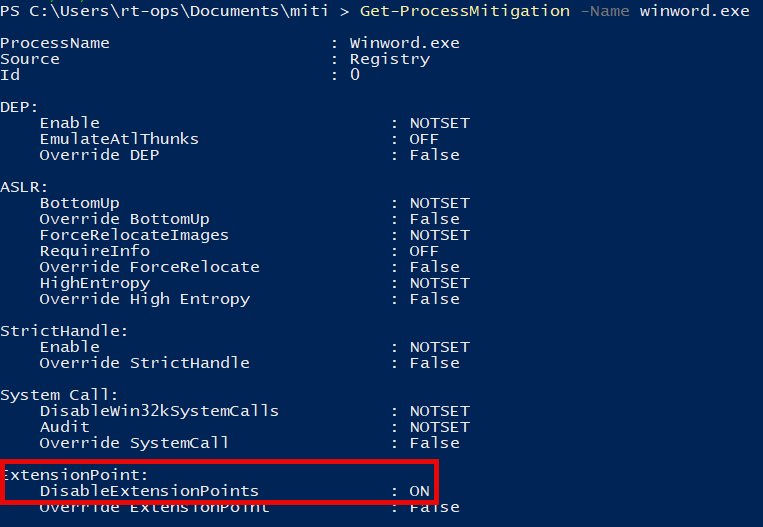

Defensive Applications of Windows Process Mitigations
Process Mitigations are a Windows feature that enables exploit mitigations on either a per-process or system-wide basis. This post explores our research into potential defensive applications of Process Mitigations to prevent commodity attack techniques as well the limitations of the control.
How do they work?⌗
Process Mitigations provide the following protections (click to expand):
System-wide
| Name | Description |
|---|---|
| Control flow guard (CFG) | Ensures control flow integrity for indirect calls. Can optionally suppress exports and use strict CFG. |
| Data Execution Prevention (DEP) | Prevents code from being run from data-only memory pages such as the heap and stacks. Only configurable for 32-bit (x86) apps, permanently enabled for all other architectures. Can optionally enable ATL thunk emulation. |
| Force randomization for images (Mandatory ASLR) | Forcibly relocates images not compiled with /DYNAMICBASE. Can optionally fail loading images that don’t have relocation information. |
| Randomize memory allocations (Bottom-Up ASLR) | Randomizes locations for virtual memory allocations. It includes system structure heaps, stacks, TEBs, and PEBs. Can optionally use a wider randomization variance for 64-bit processes. |
| Validate exception chains (SEHOP) | Ensures the integrity of an exception chain during exception dispatches. Only configurable for 32-bit (x86) applications. |
| Validate heap integrity | Terminates a process when heap corruption is detected. |
Per-process
| Name | Description |
|---|---|
| Control flow guard (CFG) | Ensures control flow integrity for indirect calls. Can optionally suppress exports and use strict CFG. |
| Data Execution Prevention (DEP) | Prevents code from being run from data-only memory pages such as the heap and stacks. Only configurable for 32-bit (x86) apps, permanently enabled for all other architectures. Can optionally enable ATL thunk emulation. |
| Force randomization for images (Mandatory ASLR) | Forcibly relocates images not compiled with /DYNAMICBASE. Can optionally fail loading images that don’t have relocation information. |
| Randomize memory allocations (Bottom-Up ASLR) | Randomizes locations for virtual memory allocations. It includes system structure heaps, stacks, TEBs, and PEBs. Can optionally use a wider randomization variance for 64-bit processes. |
| Validate exception chains (SEHOP) | Ensures the integrity of an exception chain during exception dispatches. Only configurable for 32-bit (x86) applications. |
| Validate heap integrity | Terminates a process when heap corruption is detected. |
| Arbitrary code guard (ACG) | Prevents the introduction of non-image-backed executable code and prevents code pages from being modified. Can optionally allow thread opt-out and allow remote downgrade (configurable only with PowerShell). |
| Block low integrity images | Prevents the loading of images marked with Low Integrity. |
| Block remote images | Prevents loading of images from remote devices. |
| Block untrusted fonts | Prevents loading any GDI-based fonts not installed in the system fonts directory, notably fonts from the web. |
| Code integrity guard | Restricts loading of images signed by Microsoft, WHQL, or higher. Can optionally allow Microsoft Store signed images. |
| Disable extension points | Disables various extensibility mechanisms that allow DLL injection into all processes, such as AppInit DLLs, window hooks, and Winsock service providers. |
| Disable Win32k system calls | Prevents an app from using the Win32k system call table. |
| Don’t allow child processes | Prevents an app from creating child processes. |
| Export address filtering (EAF) | Detects dangerous operations that are resolved by malicious code. Can optionally validate access by modules commonly used by exploits. |
| Import address filtering (IAF) | Detects dangerous operations that are resolved by a malicious code. |
| Simulate execution (SimExec) | Ensures that calls to sensitive APIs return to legitimate callers. Only configurable for 32-bit (x86) applications. Not compatible with ACG. |
| Validate API invocation (CallerCheck) | Ensures that legitimate callers invoke sensitive APIs. Only configurable for 32-bit (x86) applications. Not compatible with ACG |
| Validate handle usage | Causes an exception to be raised on any invalid handle references. |
| Validate image dependency integrity | Enforces code signing for Windows image dependency loading. |
| Validate stack integrity (StackPivot) | Ensures that the stack hasn’t been redirected for sensitive APIs. Not compatible with ACG. |
Source: Microsoft
Likely one of the most well-known applications of Process Mitigations is Cobalt Strike’s blockdll feature. This configures the C2 implant to spawn child processes with a Process Mitigation that prevents loading non-Microsoft DLLs, which notably prevents loading EDR-related DLLs that are not cross-signed by Microsoft (see here and here for more details).
Under the hood, Process Mitigations are deployed either during/after process creation or persistently via a system configuration change. When creating a new process, the caller can specify a Mitigation policy in the process startup information like:
#include "pch.h"
#include <iostream>
#include <Windows.h>
int main()
{
PROCESS_INFORMATION pi = {};
STARTUPINFOEXA si = {};
SIZE_T attributeSize = 0;
InitializeProcThreadAttributeList(NULL, 1, 0, &attributeSize);
PPROC_THREAD_ATTRIBUTE_LIST attributes = (PPROC_THREAD_ATTRIBUTE_LIST)HeapAlloc(GetProcessHeap(), HEAP_ZERO_MEMORY, attributeSize);
InitializeProcThreadAttributeList(attributes, 1, 0, &attributeSize);
DWORD64 policy = PROCESS_CREATION_MITIGATION_POLICY_BLOCK_NON_MICROSOFT_BINARIES_ALWAYS_ON;
UpdateProcThreadAttribute(attributes, 0, PROC_THREAD_ATTRIBUTE_MITIGATION_POLICY, &policy, sizeof(DWORD64), NULL, NULL);
si.lpAttributeList = attributes;
CreateProcessA(NULL, (LPSTR)"notepad", NULL, NULL, TRUE, EXTENDED_STARTUPINFO_PRESENT, NULL, NULL, &si.StartupInfo, &pi);
HeapFree(GetProcessHeap(), HEAP_ZERO_MEMORY, attributes);
return 0;
}
Source: ired.team
Other related APIs include: SetProcessMitigationPolicy and GetProcessMitigationPolicy.
To persistently configure a Mitigation Policy, you can use the PowerShell Set-ProcessMitigation cmdlet to configure both system-wide and per-process settings. Alternatively, you can directly write changes to the Registry. For per-process options, Process Mitigations use Image File Execution Options (IFEO) under the hood via the MitigationOptions subkey.
Prior defensive applications⌗
While not widely used, there are some notable applications of Process Mitigations for defensive purposes:
- Gabriel Landau of Elastic Security lists the
NoRemoteImagesoption, set via a driver, as a mitigation for his PPLFault exploit chain (see slide #44 or the talk recording) - Elliot Killick discussed using the
MicrosoftSignedOnlyoption to mitigate DLL sideloading for specific applications here - Nathan Blondel discussed the implications of Arbitrary Code Guard on injection into PPL processes here
- As part of the Chrome browser sandbox here
Example: AppInit DLLs⌗
As example, we will demonstrate how Process Mitigations can be used to prevent AppInit DLL persistence. AppInit DLLs allow an attacker with administrative rights to inject their own DLL into any process that loads user32.dll by configuring a Registry key.

The malicious DLL c:\inject.dll spawns a message box on load.

The extensions point mitigation is a per-process mitigation that disables AppInit DLLs, IMEs, and Event Hooks.

Any process configured with this mitigation will ignore the DLL specificed in the AppInit DLL Registry settings.
Limitiations for commodity attacks⌗
System-wide mitigations are primarily focused on exploit protections whereas per-process mitigations can be applied for additional uses, like the above example. Because per-process mitigations are controlled by IFEO, they are ultimately limited by the same limitation of other IFEO controls. Notably, that IFEO must be set based on a process’ file name (or a subset of matches via the FilterFullPath option). You cannot set global IFEO mitigations options. This also means that per-process mitigations can be easily bypassed by simply renaming/moving the target process.
Due to this, Process Mitigations are largely unsuitable as a general control for commodity attacks. Though they may be suitable in more limited capacities, such as mitigating specific attacks against a specific process that requires a static path (e.g., things in System32). Ultimately, we decided to not pursue this approach further.
If you have any questions or concerns, feel free to reach out to @2xxeformyshirt.
Additional resources⌗
Additional useful public research around Process Mitigations include:
- Yarden Shafir’s post Understanding a New Mitigation: Module Tampering Protection, 2022 Paranoia talk Security Features You’ve Never Heard of (but should), and tool MitigationFlagsCliTool
- James Forshaw’s 2016 TROOPERS talk The Joy of Sandbox Mitigations
- Emeric Nasi’s Code Injection series part 4